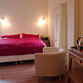
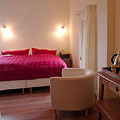
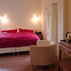

Bed & Breakfast De Perelaar closed permanently in December 2017.

View of De Perelaar - the white house on the right - from the Belgian border
‘De Perelaar’ (‘the pear tree’) is an exclusive Bed & Breakfast with two luxury double rooms in a beautiful countryside location in Libeek, South Limburg. The house, a listed building, is a characteristic seventeenth century farmhouse.